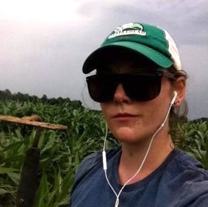

Current R-I Lab members
Please read more information on joining the lab

Elli is a plant biology graduate student coadvised by Dan Kliebenstein, working on the evolution of gene networks.

Dan Gates 


Dan is a postdoctoral scholar who studies adaptive introgression and local adaptation in maize landraces as part of the HiLo project.
Sarah Hissong 


Sarah is a NSF PGRP postdoctoral fellow and the Linnean Fellow of Oleraceous Genetics. She works on population and quantitative genetics of the crop species Brassica oleracea.

Asher Hudson 

Asher is a graduate student in Population Biology working on genotype by envrionment interaction in maize as part of the maize diversity project.

Nathaniel Langlois-Ackerson
Nate is a plant sciences major working on thermogenesis and germination in highland maize.

Sarah Odell 
Sarah is a plant biology graduate student coadvised by Dan Runcie, working on evolutionary and statistical genetics in maize.
Taylor Perkins
Taylor manages the wetlab side of our research. He was previously a technician at U. Tennessee where he also earned a MS in Environmental Science working on chestnuts.

Alyssa Phillips 
Alyssa is a Plant Biology graduate student working on environmental adaptation in big blue stem as part of the PanAnd project.

Jeffrey Ross-Ibarra 


Jeff is a Professor in the Department of Plant Sciences and a faculty member of the Center for Population Biology and the Genome Center.

Catherine Rushworth 

Cathy is a postdoctoral scholar working on the genomics and quantitative genetics of recombination rate variation in maize and teosinte as part of the maize diversity project.

Michelle Stitzer 

Michelle is a graduate student in Population Biology, working on the population genetics of transposable elements in maize and Arabidopsis as part of the maize diversity project.

Dianne Velasco 
Dianne is a graduate student in Integrated Genetics and Genomics. She studies domestication and evolution of peaches, almonds, and their relatives in the genus Prunus.

Li Wang 
Li is a research scientist working inbreeding depression and load in maize and teosinte synthetic populations. She’s also crazy about ferns.
Lab Alumni
- Markus Stetter: Postdoc 2017-2019 (Asst. Group Leader, U. Köln)
- Wnebin Mei: Postdoc 2016-2018 (Scientist at Inari Agriculture)
- Anne Lorant: Lab manager, PhD student, postdoc 2013-2018 (Postdoc, UC Davis)
- Emily Josephs: Postdoc 2015-2018 (Asst. Professor, MSU)
- Luis Avila: Programmer 2016-2018 (IT Breeding Tool Project Leader, HM Clause)
- Anna O’Brien: PhD Student 2011-2017 (Postdoc, U. Toronto)
- Jinliang Yang: Postdoc 2014-2017 (Assistant Professor, U. Nebraska)
- Josh Hough: Postdoc 2016-2017 (Postdoc, UC Santa Cruz)
- Paul Bilinski: PhD Student 2010-2016 (Associate Professor, West Shore Community College)
- Simon Renny-Byfield: Postdoc 2014-2016 (Research Scientist, Dupont Pioneer)
- Kate Crosby: Postdoc 2014-2015 (Research Scientist, Monsanto)
- Sayuri Tsukahara: Postdoc 2013-2015
- Tim Beissinger: Postdoc 2014-2015 (Professor, U. Göttingen)
- Arun Durvasula: Undergraduate 2013-2015 (PhD Student, UCLA)
- Nivaz Brar: Undergraduate 2014-2015
- Chris Fiscus: Undergraduate 2014 (PhD Student, UC Riverside)
- Tyler Kent: Undergraduate 2013-2015 (PhD Student, U. Toronto)
- Vince Buffalo: Computational Biologist 2013-2014 (PhD Student, UC Davis)
- Sofiane Mezmouk: Postdoc 2012-2014 (Research Scientist, KWS)
- Shohei Takuno: Postdoc 2012-2013 (Asst. Professor, SOKENDAI)
- Matthew Hufford: Postdoc 2010-2013 (Assoc. Professor, Iowa State)
- Tanja Pyhäjärvi: Postdoc 2010-2012 (Sr. Research Fellow, U. Oulu)
- Joost van Heerwaarden: Postdoc 2009-2011 (Researcher, U. Wageningen)
Visiting Scholar: for >100 hours of scholastic visitation
Fellow of the R-I Lab: for >500 hours of scholastic fellowship
Current Collaborators
Evolution of Incompatibility Loci in Maize and Teosinte
Quantitative Genetics of Genotype x Environment Interaction
Evolutionary Genetics of Transposable Elements
Dynamics of quantitative trait evolution and linked selection
Convergent Evolution in the Andropogoneae
Biology of rare alleles in maize and teosinte
- Ed Buckler
- Peter Bradbury
- John Doebley
- Sherry Flint-Garcia
- Jim Holland
- Matthew Hufford
- Qi Sun
- Doreen Ware
Evolutionary genetics of highland adaptation in maize